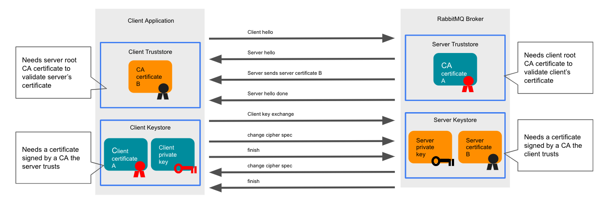

Using RabbitMQ Cluster Kubernetes Operator
Overview
This guide covers how to deploy Custom Resource objects that will be managed by the RabbitMQ Cluster Kubernetes Operator. If RabbitMQ Cluster Kubernetes Operator is not installed, see the installation guide. For instructions on getting started quickly, see the quickstart guide. This guide is structured in the following sections:
- Confirm Service Availability
- Apply Pod Security Policies
- Create a RabbitMQ Instance
- Existing examples
- Configure a RabbitMQ Instance
- Update a RabbitMQ Instance
- Set a Pod Disruption Budget
- Configure TLS
- Find Your RabbitmqCluster Service Name and Admin Credentials
- Use HashiCorp Vault
- Verify the Instance is Running
- Use the RabbitMQ Service in Your App
- Monitor RabbitMQ Clusters
- Restrict traffic using Network Policies
- Delete a RabbitMQ Instance
- Pause Reconciliation for a RabbitMQ Instance
- Configure Log Level for the Operator
Additional information about using the operator on Openshift can be found at Using the RabbitMQ Kubernetes Operators on Openshift.
Confirm Service Availability
Before configuring your app to use RabbitMQ Cluster Kubernetes Operator, ensure that RabbitmqCluster Custom Resource is deployed to your Kubernetes cluster and is available.
To confirm this availability, run
kubectl get customresourcedefinitions.apiextensions.k8s.io
Then verify that rabbitmqclusters.rabbitmq.com is on the list, as in the example below:
kubectl get customresourcedefinitions.apiextensions.k8s.io # NAME CREATED AT # rabbitmqclusters.rabbitmq.com 2019-10-23T10:11:06Z
If it is not, install it by following the steps in the installation guide.
(Optional) Apply Pod Security Policies
If pod security policies are enabled in the Kubernetes cluster, a [Cluster]Role and [Cluster]RoleBinding must be created to enable the Pods to be scheduled. For more information about Pod security policies, see the Kubernetes documentation. If Role and RoleBinding are used, it will only be effective in the Namespace where the RBACs are deployed.
If Pod security policies are not enabled, skip to Create a RabbitMQ Instance below.
The Role and RoleBinding should be created before a RabbitmqCluster instance is created. It's ok to create a binding that refers to a non-existing Service Account or User. The Operator creates a Service Account using the pattern INSTANCE-NAME-server. For example, a RabbitmqCluster named 'mycluster' will generate a Service Account named mycluster-server. In order to allow a Service Account to use PSPs, a Role with the verb 'use' must be bound to the Service Account. For example:
# Assuming RabbitmqCluster name is 'mycluster'
kubectl create role rabbitmq:psp:unprivileged \
--verb=use \
--resource=podsecuritypolicy \
--resource-name=some-pod-security-policy
# role "rabbitmq:psp:unprivileged" created
kubectl create rolebinding rabbitmq-mycluster:psp:unprivileged \
--role=rabbitmq:psp:unprivileged \
--serviceaccount=some-namespace:mycluster-server
# rolebinding "rabbitmq-mycluster:psp:unprivileged" created
Kubernetes documentation has an example to create RBAC rules and a policy.
Create a RabbitMQ Instance
To create a RabbitMQ instance, a RabbitmqCluster resource definition must be created and applied. RabbitMQ Cluster Kubernetes Operator creates the necessary resources, such as Services and StatefulSet, in the same namespace in which the RabbitmqCluster was defined.
First, create a YAML file to define a RabbitmqCluster resource named definition.yaml.
Note: The YAML file can have any name, but the steps that follow assume it is named definition.
Then copy and paste the below snippet into the file and save it:
apiVersion: rabbitmq.com/v1beta1 kind: RabbitmqCluster metadata: name: definition
Note: when creating RabbitmqClusters on Openshift, there are extra parameters that must be added to all RabbitmqCluster manifests. See Support for Arbitrary User IDs for details.
Next, apply the definition by running:
kubectl apply -f definition.yaml
Then verify that the process was successful by running:
kubectl get all -l app.kubernetes.io/name=definition
If successful, there will be a running pod and a service that exposes the instance. For example:
kubectl get all -l app.kubernetes.io/name=definition # NAME READY STATUS RESTARTS AGE # pod/definition-server-0 1/1 Running 0 112s # # NAME TYPE CLUSTER-IP EXTERNAL-IP PORT(S) AGE # service/definition-nodes ClusterIP None None 4369/TCP 113s # service/definition ClusterIP 10.103.214.196 None 5672/TCP,15672/TCP,15692/TCP 113s
A RabbitMQ cluster is now ready to be used by applications. Continue for more advanced configuration options. For more information, see the RabbitMQ documentation guides.
Internal labels and annotations
The child resources created by the Cluster Operator always have the following set of labels:
- app.kubernetes.io/name - the value is the RabbitmqCluster name associated to the resource.
- app.kubernetes.io/component - the component it belongs to. Currently always set to rabbitmq.
- app.kubernetes.io/part-of - The name of a higher level application this one is part of. Currently always set to rabbitmq.
The same set of labels is applied to the Pods created by the StatefulSet. In addition to the above, the following two annotations are added to the Pods:
- prometheus.io/port - with value 15692.
- prometheus.io/scrape - with value true.
Existing examples
There are examples for some common use cases in the GitHub repository. Some interesting use cases are:
- How to import a definitions file in RabbitMQ using the Operator
- How to configure memory and CPU limits for RabbitMQ
- A production ready example, tested in Google Cloud Platform and a good baseline to start.
There are more examples available.
Configure a RabbitMQ Instance
To configure a RabbitMQ instance, open definition.yaml or edit the configuration in place by running:
kubectl edit rabbitmqcluster definition
Next, add any of the properties described below along with their values. Every property listed below is optional.
A number of configuration examples are available in the Operator repository on GitHub.
Labels and Annotations
Description: Labels and annotations in RabbitmqCluster metadata are propagated to the resources created by the Operator. The Pods do not inherit these labels and/or annotations.
Default Value: N/A - Empty
Example:
apiVersion: rabbitmq.com/v1beta1
kind: RabbitmqCluster
metadata:
labels:
app: rabbitmq
annotations:
some: annotation
name: rabbitmqcluster-sample
Number of Replicas
Description: Specify the number of replicas for the RabbitmqCluster. An even number of replicas is highly discouraged. Odd numbers (1, 3, 5, 7, and so on) must be used.
Default Value: 1
Example:
apiVersion: rabbitmq.com/v1beta1 kind: RabbitmqCluster metadata: name: rabbitmqcluster-sample spec: replicas: 3
Image
Description: Specify the RabbitMQ image reference. This property is necessary if a private registry is used.
Default Value: The community RabbitMQ with management plugin image.
Example:
apiVersion: rabbitmq.com/v1beta1 kind: RabbitmqCluster metadata: name: rabbitmqcluster-sample spec: image: my-private-registry/rabbitmq:my-custom-tag
imagePullSecrets
Description: An array of Secret names to be used as imagePullSecrets for the RabbitMQ image. If the registry requires authentication, this array must have the name of the secret used to pull images. Kubernetes Secrets can be created by running:
kubectl -n rabbitmq-system create secret docker-registry
Default Value: N/A
Example:
apiVersion: rabbitmq.com/v1beta1 kind: RabbitmqCluster metadata: name: rabbitmqcluster-sample spec: image: my-private-registry/rabbitmq:3.10 imagePullSecrets: - name: some-secret
Service Type
Description: Specify the Kubernetes Service type for the RabbitmqCluster Service. The available types are:
- ClusterIP
- NodePort
- LoadBalancer
RabbitMQ Cluster Kubernetes Operator currently does not support the ExternalName Service Type.
Default Value: ClusterIP
Example:
apiVersion: rabbitmq.com/v1beta1
kind: RabbitmqCluster
metadata:
name: rabbitmqcluster-sample
spec:
service:
type: LoadBalancer
Service Annotations
Description: Specify the Kubernetes Service annotations for the RabbitmqCluster Service. The Services created by the RabbitMQ Cluster Kubernetes Operator will have these annotations.
Default Value: N/A
Example:
apiVersion: rabbitmq.com/v1beta1
kind: RabbitmqCluster
metadata:
name: rabbitmqcluster-sample
spec:
service:
annotations:
service.beta.kubernetes.io/aws-load-balancer-internal: 0.0.0.0/0
Persistence
Description: Specify the persistence settings for the RabbitmqCluster Service. The available settings are:
- storageClassName: The name of the Kubernetes StorageClass to use.
Note: If your cluster does not have a default StorageClass, this property must be set, otherwise RabbitMQ Pods will not be scheduled because they require a Persistent Volume.
- storage: The capacity of the persistent volume, expressed as a Kubernetes resource quantity. Set to 0 to deactivate persistence altogether (this may be convenient in CI/CD and test deloyments that should always start fresh).
Default Values:
- storageClassName: Not set by default. If you do not set a value, the default StorageClass for the Kubernetes cluster is used.
- storage: 10Gi
To see the default StorageClass, run kubectl get storageclasses.
Example:
apiVersion: rabbitmq.com/v1beta1
kind: RabbitmqCluster
metadata:
name: rabbitmqcluster-sample
spec:
persistence:
storageClassName: fast
storage: 20Gi
For more information about concepts mentioned above, see:
| Concept | More information in… |
|---|---|
| StorageClass | The Kubernetes documentation |
| Persistent volume capacity | The Kubernetes documentation |
| Kubernetes Resource Quantity | The Kubernetes Resource Model documentation in GitHub |
Note: using local-path provisioner does not enforce a disk size. This means that RabbitMQ will report more disk available than the configured in .spec.peristence.storage. This happens because the Persistent Disk is created as a local folder in the Kubernetes node hosting the Pod.
Resource Requirements
Description: Specify the resource requests and limits of the RabbitmqCluster Pods. CPU requirements must be in CPU units. Memory requirements must be in bytes. Both values must be expressed as a Kubernetes resource quantity.
The RabbitMQCluster does not deploy if these configurations are provided but not valid.
Default Values:
- Memory limit: 2 Gi
- CPU limit: 2000 millicores
- Memory request: 2 Gi
- CPU request: 1000 millicores
The RabbitMQ high-water mark is set to 0.4 times the memory limit. It is recommended to keep the memory requests and limits as the same value.
Example:
apiVersion: rabbitmq.com/v1beta1
kind: RabbitmqCluster
metadata:
name: rabbitmqcluster-sample
spec:
resources:
requests:
cpu: 1000m
memory: 2Gi
limits:
cpu: 1000m
memory: 2Gi
Note: It's possible for RabbitMQ and Erlang to temporarily exceed the total available memory, which could cause an immediate OOM kill. To prevent this from happening, the cluster operator sets memory headroom of 20% (with a max value of 2GB) by configuring total_memory_available_override_value. This means the actual memory limit set in RabbitMQ is 20% less than the specified resource requirement.
For more information about concepts mentioned above, see:
| Concept | More information in… |
|---|---|
| Resource request and limit requirements | The Kubernetes documentation |
| CPU measurement | The Kubernetes documentation |
| High-water mark | The RabbitMQ documentation |
Affinity and Anti-affinity Rules
Description: Affinity and anti-affinity rules are structured in the same way as Kubernetes affinity rules.
Default Value: N/A
Example:
apiVersion: rabbitmq.com/v1beta1
kind: RabbitmqCluster
metadata:
name: rabbitmqcluster-sample
spec:
affinity:
nodeAffinity:
requiredDuringSchedulingIgnoredDuringExecution:
nodeSelectorTerms:
- matchExpressions:
- key: kubernetes.io/hostname
operator: In
values:
- node-1
Pod Tolerations
Description: Add tolerations for the RabbitmqCluster pods.
Default Value: N/A
Example:
apiVersion: rabbitmq.com/v1beta1
kind: RabbitmqCluster
metadata:
name: rabbitmqcluster-sample
spec:
tolerations:
- key: "dedicated"
operator: "Equal"
value: "rabbitmq"
effect: "NoSchedule"
RabbitMQ Additional Configuration
Description: Additional RabbitMQ configuration options that will be written to /etc/rabbitmq/conf.d/90-userDefinedConfiguration.conf. The RabbitMQ Cluster Kubernetes Operator generates a configuration file /etc/rabbitmq/conf.d/10-operatorDefaults.conf with the following properties:
cluster_formation.peer_discovery_backend = rabbit_peer_discovery_k8s cluster_formation.k8s.host = kubernetes.default cluster_formation.k8s.address_type = hostname cluster_partition_handling = pause_minority queue_leader_locator = balanced disk_free_limit.absolute = 2GB cluster_formation.randomized_startup_delay_range.min = 0 cluster_formation.randomized_startup_delay_range.max = 60
All the values in additional config will be applied after this list. If any property is specified twice, the latest will take effect. To learn more about RabbitMQ configuration options and formart, check out the dedicated Configuration Documentation.
Default Value: N/A
Example:
apiVersion: rabbitmq.com/v1beta1
kind: RabbitmqCluster
metadata:
name: rabbitmqcluster-sample
spec:
rabbitmq:
additionalConfig: |
channel_max = 1050
RabbitMQ Advanced Configuration
Description: Advanced configuration that will be written to /etc/rabbitmq/advanced.config file.
Default Value: N/A
Example:
apiVersion: rabbitmq.com/v1beta1
kind: RabbitmqCluster
metadata:
name: rabbitmqcluster-sample
spec:
rabbitmq:
advancedConfig: |
[
{ra, [
{wal_data_dir, '/var/lib/rabbitmq/quorum-wal'}
]}
].
RabbitMQ Environment Configuration
Description: RabbitMQ uses rabbitmq-env.conf to override the defaults built-in into the RabbitMQ scripts and CLI tools. The value of spec.rabbitmq.envConfig will be written to /etc/rabbitmq/rabbitmq-env.conf.
Default Value: N/A
Example:
apiVersion: rabbitmq.com/v1beta1
kind: RabbitmqCluster
metadata:
name: rabbitmqcluster-sample
spec:
rabbitmq:
envConfig: |
RABBITMQ_DISTRIBUTION_BUFFER_SIZE=some_value
Please refer to the spec.override property for additional ways of customizing the environment.
RabbitMQ Additional Plugins
Description: Additional plugins to enable in RabbitMQ. RabbitMQ Cluster Kubernetes Operator enabled rabbitmq_peer_discovery_k8s, rabbitmq_prometheus and rabbitmq_management by default. Plugins on this list will also be enabled.
Default Value: N/A
Example:
apiVersion: rabbitmq.com/v1beta1
kind: RabbitmqCluster
metadata:
name: rabbitmqcluster-sample
spec:
rabbitmq:
additionalPlugins:
- rabbitmq_top
- rabbitmq_shovel
If community plugins need to be provisioned, they should be included into a custom image or downloaded on node startup. The latter option is generally not recommended as it goes against the philosophy of immutable images and repeatable builds.
TLS Configuration
Description: Configure RabbitMQ to use the certificates provided by Secret spec.tls.secretName. The Secret must already exist in the same Namespace as the RabbitmqCluster object. It is expected that the Secret contains tls.key and tls.crt for the private key and public certificate respectively.
By default, enabling TLS for client connections does not disable non-TLS listeners. Therefore, unencrypted connections will still be accepted. To disable non-TLS listeners and only accept TLS connections, set spec.tls.disableNonTLSListeners: true.
It is also possible to make RabbitMQ verify peer certificates against a provided CA certificate. The same can be done by clients, so peer verification can be mutual ("mTLS"). This certificate must be stored in a Secret of name spec.tls.caSecretName, in the same Namespace as the RabbitmqCluster object. Note that this can be the same Secret as spec.tls.secretName. This Secret must have a key ca.crt containing the CA certificate.
RabbitMQ nodes can reload TLS certificates without a node restart. To rotate the TLS certificate, update the TLS Secret object with the new certificate directly and this change will be picked up by the RabbitMQ pods within several minutes. If you need to speed up the process, you can force RabbitMQ to reload the certificate immediately by running:
kubectl exec -it INSTANCE-server-0 -- rabbitmqctl eval "ssl:clear_pem_cache()."
or directly from within the node pod:
rabbitmqctl eval "ssl:clear_pem_cache()."
Since each node has its own cache, if you decide to run this command, you should execute it on all cluster nodes.
Default Value: N/A
Example:
apiVersion: rabbitmq.com/v1beta1
kind: RabbitmqCluster
metadata:
name: rabbitmqcluster-sample
spec:
tls:
secretName: rabbitmq-server-certs
caSecretName: rabbitmq-ca-cert
disableNonTLSListeners: true
Skip Post Deploy
Description: If unset, or set to false, operator will run rabbitmq-queues rebalance all whenever the cluster is updated. When set to true, operator will skip running rabbitmq-queues rebalance all. For more information, see rabbitmq-queues rebalance all.
Default Value: false
Example:
apiVersion: rabbitmq.com/v1beta1 kind: RabbitmqCluster metadata: name: rabbitmqcluster-sample spec: skipPostDeploySteps: true
Termination Grace Period Timeout
Description: TerminationGracePeriodSeconds is the timeout that each rabbitmqcluster pod will have to run the container preStop lifecycle hook to ensure graceful termination. The lifecycle hook checks quorum status of existing quorum queues and synchronization of mirror queues, before safely terminates pods. See rabbitmq-queues check_if_node_is_quorum_critical and rabbitmq-queues check_if_node_is_mirror_sync_critical for more details. It defaults to 604800 seconds ( a week long) to ensure that the hook can finish running. If pods are terminated before the lifecycle hook finishes running, there could be potential data loss.
Default Value: 604800
Example:
apiVersion: rabbitmq.com/v1beta1 kind: RabbitmqCluster metadata: name: rabbitmqcluster-sample spec: terminationGracePeriodSeconds: 60
Override Resource Properties
Description: Use with caution! Customize resources created by the operator by overriding their properties or providing additional settings. This is an advanced feature that allows you to enable features that are not explicitly supported but can easily render your RabbitMQ Cluster unusable if used incorrectly. You can customize the StatefulSet and the Service used by client applications. The values for spec.override.statefulSet and spec.override.service should match StatefulSet object and Service object specification respectively.
Default Value: N/A
Example:
apiVersion: rabbitmq.com/v1beta1
kind: RabbitmqCluster
metadata:
name: additional-port
spec:
replicas: 1
override:
service:
spec:
ports:
- name: additional-port # adds an additional port on the service
protocol: TCP
port: 12345
statefulSet:
spec:
template:
spec:
containers:
- name: rabbitmq
ports:
- containerPort: 12345 # opens an additional port on the rabbitmq server container
name: additional-port
protocol: TCP
When customizing the environment variables of a container (env property), you can refer to MY_POD_NAME, MY_POD_NAMESPACE and K8S_SERVICE_NAME variables to access container metadata. For example:
- name: MY_VARIABLE value: test-$(MY_POD_NAME).$(K8S_SERVICE_NAME).$(MY_POD_NAMESPACE)
Update a RabbitMQ Instance
It is possible to add, change, or remove properties in a RabbitmqCluster object for an existing RabbitMQ instance.
If a property is removed, it reverts to its default value, if it has one. To view the default values, see Configure a RabbitMQ Instance above.
The configurations are listed in the table below.
| Custom Resource attribute | Description |
|---|---|
| metadata.labels | These are labels to add to every child resource, such as StatefulSet and Service. Labels starting with app.kubernetes.io are ignored because these are reserved for internal use. Labels are not applied to Pods. |
| metadata.annotations |
These are annotations to add to every child resource, such as StatefulSet and Service. Annotations containing kubernetes.io and k8s.io are ignored because these are reserved for Kubernetes core components. When spec.service.annotations is specified, annotations for the service are merged between spec.service.annotations and metadata.annotations. If the same key is specified in both configurations, the value from spec.service.annotations is applied. |
| spec.image | The RabbitMQ image reference. |
| spec.replicas | The number of replicas of RabbitMQ nodes. Even numbers are highly discouraged and it is strongly recommended to use odd numbers. |
| spec.imagePullSecrets | An array of names of Kubernetes secrets, used to access the registry which contains the RabbitMQ image. This is only required for private registries. |
| spec.service.type | The Kubernetes Service type for the RabbitmqCluster Service. This must be ClusterIP, NodePort, or LoadBalancer. |
| spec.service.annotations | These are annotations on the service. Note that annotations containing kubernetes.io and k8s.io are not filtered at this level. |
| spec.persistence.storage | The capacity of the persistent volume, expressed as a Kubernetes resource quantity. Set to `0` to deactivate persistence altogether (this may be convenient in CI/CD and test deloyments that should always start fresh). |
| spec.persistence.storageClassName | The name of the Kubernetes StorageClass that will be used to request Persistent Volumes. |
| spec.resources.requests.cpu | The CPU units required by the Kubernetes scheduler for the container running RabbitMQ. |
| spec.resources.requests.memory | The memory units required by the Kubernetes scheduler for the container running RabbitMQ. |
| spec.resources.limits.cpu | The CPU units used to calculate the share of CPU time available to the RabbitMQ container per 100 ms. |
| spec.resources.limits.memory | The memory limit allowed to be used by RabbitMQ container. The container won't be allowed to use more than this limit. |
| spec.affinity | The Pod affinity and anti-affinity rules. |
| spec.tolerations | Pod tolerations that will be applied to RabbitMQ Pods. |
| spec.tls.secretName | The Secret name used to configure RabbitMQ TLS. The Secret must exist and contain keys `tls.key` and `tls.crt`. |
| spec.tls.caSecretName | The Secret name used to configure RabbitMQ mTLS (used to verify clients' certificates). The Secret must exist and contain key `ca.crt`. |
| spec.tls.disableNonTLSListeners | When set to `true`, only TLS connections are allowed (non-TLS listeners are disabled). |
| spec.rabbitmq.additionalPlugins | List of plugins to enabled in RabbitMQ. By default, RabbitMQ Cluster Kubernetes Operator enables Prometheus, K8s Peer Discovery and Management plugins. |
| spec.rabbitmq.additionalConfig | Additional configuration to append to the Cluster Generated configuration. Check Additional Config section for the list of always generated configuration. |
| spec.rabbitmq.advancedConfig | RabbitMQ advanced.config. See RabbitMQ Advanced Configuration for an example. |
| spec.override | Arbitrary overrides to the resources created by RabbitMQ Cluster Kubernetes Operator. This feature should be used with great care as overriding essential properties can render a RabbitMQ cluster unusable to applications or unreachable to the Operator. See the Override section to learn more. |
For more information about CPU units, the Kubernetes scheduler, and CPU time availability, see the Kubernetes guide on compute resources.
For more information about Pod affinity and anti-affinity rules, see the Kubernetes guide on affinity rules.
To update a RabbitMQ instance:
- Open definition.yaml.
- Add or modify any of the properties listed in the table above.
- Save your changes to definition.yaml.
- Apply the definition by running: kubectl apply -f definition.yaml
(Optional) Set a Pod Disruption Budget
A Pod Disruption Budget (PDB) limits the number of Pod replicas that are down simultaneously because of voluntary disruptions.
For example, a PDB can help:
- Maintain the availability of quorum-based distributed workloads during maintenance events, such as Kubernetes API upgrades or kernel upgrades.
- Reduce downtime for RabbitMQ configurations that normally sacrifice availability in favor of data consistency, such as pause-minority mode for partition tolerance.
Create a PodDisruptionBudget Object
To create and set a PodDisruptionBudget object, first create a file called rabbitmq-pdb.yaml that includes:
apiVersion: policy/v1beta1
kind: PodDisruptionBudget
metadata:
name: pdb-rabbitmq
spec:
maxUnavailable: 1
selector:
matchLabels:
app.kubernetes.io/name: YOUR-RABBITMQ-CUSTOM-RESOURCE-NAME
Then run
kubectl apply -f rabbitmq-pdb.yaml
For more information about concepts mentioned above, see:
| Concept | More information in… |
|---|---|
| PDBs | The Kubernetes documentation |
| Voluntary and involuntary disruptions | The Kubernetes documentation |
| pause-minority mode | The RabbitMQ documentation |
(Optional) Configure TLS
Transport Layer Security (TLS) is a protocol for encrypting network traffic. RabbitMQ supports TLS, and the cluster operator simplifies the process of configuring a RabbitMQ cluster with TLS or mutual TLS (mTLS) encrypted traffic between clients and the cluster, as well as supporting encrypting RabbitMQ inter-node traffic with mTLS. A basic overview of TLS is helpful for understanding this guide.
TLS encrypting traffic between clients and RabbitMQ
In order to encrypt traffic between clients and the RabbitMQ cluster, the RabbitMQ cluster must be configured with a server certificate and key pair signed by a Certificate Authority (CA) trusted by the clients. This allows clients to verify that the server is trusted, and traffic sent between the client and server are encrypted using the server's keys.
The certificate's Subject Alternative Name (SAN) must contain at least the following attributes: * *.<RabbitMQ cluster name>-nodes.<namespace>.svc.<K8s cluster domain name> * <RabbitMQ cluster name>.<namespace>.svc.<K8s cluster domain name>
If wildcards are not permitted, the certificate must provide a SAN attribute for each RabbitMQ node in the RabbitMQ cluster. For example, if you deploy a 3-node RabbitMQ cluster named myrabbit in namespace mynamespace with the default Kubernetes cluster domain cluster.local, the SAN must include at least the following attributes: * myrabbit-server-0.myrabbit-nodes.mynamespace.svc.cluster.local * myrabbit-server-1.myrabbit-nodes.mynamespace.svc.cluster.local * myrabbit-server-2.myrabbit-nodes.mynamespace.svc.cluster.local * myrabbit.mynamespace.svc.cluster.local
Note that the last SAN attribute is the client service DNS name. Depending on the service type used (spec.service.type), further SAN attributes may be required. For example, if using service type NodePort, the SAN must include the external IP address of each Kubernetes node.
To enable TLS, create a Kubernetes secret containing the PEM-encoded server certificate server.pem and private key server-key.pem
kubectl create secret tls tls-secret --cert=server.pem --key=server-key.pem
or use a tool such as Cert Manager to generate a TLS secret.
Once this secret exists, a RabbitMQ cluster can be deployed following the TLS example.
apiVersion: rabbitmq.com/v1beta1
kind: RabbitmqCluster
metadata:
name: additional-port
spec:
replicas: 1
tls:
secretName: tls-secret
Mutual TLS encryption between clients and RabbitMQ
Mutual TLS (mTLS) enhances TLS by requiring that the server verify the identity of the client, in addition to the client verifying the server, which already occurs in TLS encryption. In order for this mutual verification to occur, both the client and server must be configured with certificate and key pairs, with the client pair signed by a CA trusted by the server and the server pair signed by a CA trusted by the client. The mutual verification process is shown in the following diagram:

In addition to the configuration required to support TLS, configuring mutual TLS requires the RabbitMQ cluster to be configured with the CA certificate used to sign the client certificate and key pair, ca.pem. Create a Kubernetes secret with key ca.crt containing this secret
kubectl create secret generic ca-secret --from-file=ca.crt=ca.pem
or create this secret using a tool such as Cert Manager.
Once this secret and the tls-secret exist, a RabbitMQ cluster can be deployed following the mTLS example.
apiVersion: rabbitmq.com/v1beta1
kind: RabbitmqCluster
metadata:
name: mtls
spec:
replicas: 1
tls:
secretName: tls-secret
caSecretName: ca-secret
In order to enforce client verification, RabbitMQ must be configured to reject clients that do not present certificates. This can be done by enabling TLS peer verification using the ssl_options.fail_if_no_peer_cert option in the additional config:
spec:
rabbitmq:
additionalConfig: |
ssl_options.fail_if_no_peer_cert = true
Find Your RabbitmqCluster Service Name and Admin Credentials
If an app is deployed in the same Kubernetes cluster as RabbitMQ, the RabbitmqCluster Service name and admin credentials can be used to connect such app to RabbitMQ. The steps required to make that connection can vary greatly by deployment and are beyond the scope of this documentation.
Follow the procedures below to find your RabbitmqCluster Service name and admin credentials.
Find Your RabbitmqCluster Service Name
The Service used to access RabbitMQ Pods is displayed in the Custom Resource Status field as status.serviceReference. This field shows the Service name and namespace. The following command shows how to fetch this information:
kubectl get rabbitmqcluster INSTANCE \
-ojsonpath='Name: {.status.admin.serviceReference.name} -- Namespace: {.status.admin.serviceReference.namespace}'
Where INSTANCE is the name of RabbitmqCluster resource.
For more information on how to connect using Services, check Kubernetes documentation regarding Service DNS.
Retrieve Your RabbitMQ Admin Credentials
Admin credentials for a RabbitmqCluster are stored in a Kubernetes secret called INSTANCE-default-user, where INSTANCE is the name of the RabbitmqCluster object. Kubernetes encodes secrets using base64.
The name and namespace of the secret is also present in the custom resource status. To retrieve the Secret name, run kubectl get rabbitmqcluster INSTANCE -ojsonpath='{.status.defaultUser.secretReference.name}'
To retrieve credentials and display them in plaintext, first display the username by running:
kubectl -n NAMESPACE get secret INSTANCE-default-user -o jsonpath="{.data.username}" | base64 --decode
Where:
- INSTANCE is the name of your RabbitmqCluster
- NAMESPACE is the Kubernetes namespace that contains RabbitmqCluster
Next, display the password by running:
kubectl -n NAMESPACE get secret INSTANCE-default-user -o jsonpath="{.data.password}" | base64 --decode
(Optional) Use HashiCorp Vault
The RabbitMQ Cluster Operator supports storing RabbitMQ admin credentials and RabbitMQ server certificates in HashiCorp Vault.
Note that the Operator works with Vault KV secrets engine version 2 only.
Read RabbitMQ Admin Credentials from Vault
Instead of having the Operator create RabbitMQ admin credentials putting them into a Kubernetes Secret object as described in Retrieve Your RabbitMQ Admin Credentials, you can configure a RabbitmqCluster to read RabbitMQ admin credentials from Vault. To do so, follow the vault-default-user example and configure the Vault secret backend:
spec:
secretBackend:
vault:
role: rabbitmq
# Optionally, set Vault annotations as listed in
# https://www.vaultproject.io/docs/platform/k8s/injector/annotations
annotations:
vault.hashicorp.com/template-static-secret-render-interval: "15s"
defaultUserPath: secret/data/rabbitmq/config
The credentials must have been written to Vault before the RabbitmqCluster is created. As described in the example, RabbitMQ admin password rotation is supported without the need to restart the RabbitMQ server.
Issue RabbitMQ Server Certificates from Vault
To configure TLS, instead of providing a Kubernetes Secret object containing RabbitMQ server private key, certificate, and certificate authority as described in TLS Configuration, you can configure a RabbitmqCluster to request new short-lived server certificates from Vault PKI Secrets Engine upon every RabbitMQ Pod (re)start. To do so, follow the vault-tls example and configure the vault secret backend:
spec:
secretBackend:
vault:
role: rabbitmq
tls:
pkiIssuerPath: pki/issue/cert-issuer
The RabbitMQ server private key will never be stored in Vault.
Verify the Instance is Running
Deploy the RabbitMQ throughput testing tool PerfTest to quickly verify that your instance is running correctly. For more information, see PerfTest in GitHub.
Note: if the below commands are executed from outside the namespace where RabbitmqCluster object was created, add -n NAMESPACE to the kubectl commands below.
To install and run PerfTest, run these commands:
instance=INSTANCE-NAME
username=$(kubectl get secret ${instance}-default-user -o jsonpath="{.data.username}" | base64 --decode)
password=$(kubectl get secret ${instance}-default-user -o jsonpath="{.data.password}" | base64 --decode)
service=${instance}
kubectl run perf-test --image=pivotalrabbitmq/perf-test -- --uri "amqp://${username}:${password}@${service}"
To verify that PerfTest is sending and receiving messages by running:
kubectl logs -f perf-test
A log appears as in this example:
kubectl logs -f perf-test # id: test-104555-858, starting consumer #0 # id: test-104555-858, starting consumer #0, channel #0 # id: test-104555-858, starting producer #0 # id: test-104555-858, starting producer #0, channel #0 # id: test-104555-858, time: 1.000s, sent: 19057 msg/s, received: 11768 msg/s, min/median/75th/95th/99th consumer latency: 4042/140608/190841/251618/258979 micro-s # id: test-104555-858, time: 2.000s, sent: 24020 msg/s, received: 16283 msg/s, min/median/75th/95th/99th consumer latency: 222998/507432/642110/754038/776600 micro-s
To delete a PerfTest instance, use
kubectl delete pod perf-test
Use the RabbitMQ Service in Your App
For information about how to start using your apps, see RabbitMQ tutorials and guides on Connections, Publishers, and Consumers.
Monitor RabbitMQ Clusters
For production systems, it is critically important to enable RabbitMQ cluster monitoring.
See Monitoring RabbitMQ in Kubernetes to learn about the recommended monitoring options for Kubernetes-deployed clusters.
Restrict traffic using Network Policies
Network Policies, akin to firewalls, allow you to restrict traffic to/from Pods in your RabbitmqCluster at the IP address or port level. This may be worth doing on a production cluster, for example, to ensure only Pods in the RabbitmqCluster can access the inter-node communication ports (epmd and clustering), or to restrict messaging traffic to only be permitted from known trusted client Pods.
The cluster-operator repo has a documented example with several sample NetworkPolicies that you can use as guides for defining your own secure network topology.
Delete a RabbitMQ Instance
To delete a RabbitMQ service instance, run
kubectl delete rabbitmqcluster INSTANCE
where INSTANCE is the name of your RabbitmqCluster, or use
kubectl delete -f INSTANCE.yaml
Pause Reconciliation for a RabbitMQCluster
It is possible to pause reconciliation for a RabbitMQ instance: this will prevent the cluster operator from watching and updating the instance. To do so, set a special label "rabbitmq.com/pauseReconciliation=true" on your RabbitmqCluster.
This feature can be used if you wish to upgrade to a new version of the cluster operator but do not wish for the operator to start updating some of your RabbitmqCluster. Please be aware that pausing reconciliation means that the operator will not watch this RabbitmqCluster until the special label is removed. Any updates to the paused RabbitmqCluster will be ignored by the operator and if you accidentally delete a child resource of the RabbitmqCluster (e.g. the Stateful Set or Service object), deleted object won't be recreated automatically. We do not recommend using this feature unless absolutely necessary.
To pause reconciliation, set the label by running:
kubectl label rabbitmqclusters INSTANCE-NAME rabbitmq.com/pauseReconciliation=true
where INSTANCE is the name of your RabbitmqCluster.
To resume reconciliation, remove the label by running:
kubectl label rabbitmqclusters INSTANCE-NAME rabbitmq.com/pauseReconciliation-
Configure Log Level for the Operator
The Operator logs reconciliation results and errors. Operator logs can be inspected by kubectl -n rabbitmq-system logs -l app.kubernetes.io/name=rabbitmq-cluster-operator. It uses zap logger which can be configured via passing command line flags in the Operator deployment manifest.
For example, to configure the log level to 'debug':
apiVersion: apps/v1
kind: Deployment
metadata:
name: rabbitmq-cluster-operator
namespace: rabbitmq-system
spec:
template:
spec:
containers:
- args:
- --zap-log-level=debug
command:
- /manager
Other available command line flags for the zap logger can be found documented in controller runtime.
Getting Help and Providing Feedback
If you have questions about the contents of this guide or any other topic related to RabbitMQ, don't hesitate to ask them on the RabbitMQ mailing list.
Help Us Improve the Docs <3
If you'd like to contribute an improvement to the site, its source is available on GitHub. Simply fork the repository and submit a pull request. Thank you!
Copyright © 2007-2023 VMware, Inc. or its affiliates. All rights reserved.
Terms of Use •
Privacy •
Trademark Guidelines •
Your California Privacy Rights •
Cookie Settings